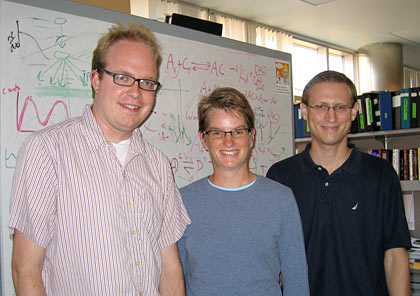

News Archives : 2007 : Multisite Phosphorylation and Circadian Oscillations
by Michael Rust
October 17, 2007
|
 Left to right: Michael J. Rust, Erin K. O'Shea, and Joseph S. Markson |
Circadian rhythms are daily cycles of behavior and metabolism that allow organisms to anticipate the 24-hour rhythm of the external environment. These rhythms are controlled by biological oscillators known as circadian clocks which are found throughout life, from prokaryotes to mammals. The simplest known circadian clock is found in photosynthetic cyanobacteria, and the core consists of three proteins: KaiA, KaiB and KaiC. Remarkably, as discovered by Takao Kondo’s lab in 2005, the oscillator can be reconstituted in vitro; combining these three proteins with ATP in a test tube produces stable circadian oscillations in the phosphorylation state of KaiC that persist for many days. Thus, the interactions of these three proteins form the minimal core of a circadian clock.
Michael Rust and Joe Markson, a postdoc and graduate student in Erin O’Shea’s lab, sought to understand the underlying mechanism that allows this system to generate stable oscillation. We suspected that the two phosphorylation sites on the autokinase/autophosphatase KaiC might not be functionally equivalent. To investigate this hypothesis, we used mass spectrometry, in collaboration with John Neveu, Bogdan Budnik and Renee Robinson in Bill Lane’s group, to monitor KaiC phosphorylation throughout the circadian cycle. We determined that, indeed, KaiC’s two phosphorylation sites play very different roles during the oscillation. The three possible phosphorylated forms appear in a cyclic pattern throughout the daily cycle. To determine the origin of this sequence of events, the authors studied the behavior of simpler partial reactions: either KaiC alone or KaiC with KaiA, which promotes phosphorylation. These experiments allowed them to measure the kinetic rate constants for phosphorylation and dephosphorylation of each site.
Further biochemical work showed that one specific phosphorylated form of KaiC interacts with KaiB, inactivating KaiA. To test if the measured kinetics along with this feedback loop were sufficient to explain oscillation, the authors, together with Daniel Fisher, now at Stanford, created a mathematical model incorporating these simple assumptions. Using independently measured rate constants, this model reproduces stable circadian oscillations in phosphorylation with the same structure as the experimental system. This work shows quantitatively how a protein with multiple phosphorylation sites can orchestrate interactions with other proteins to produce strong nonlinearities and generate complex behavior, such as stable oscillation.
Further Reading: